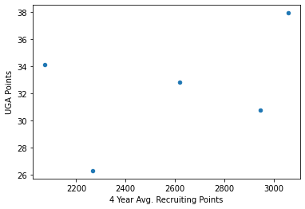
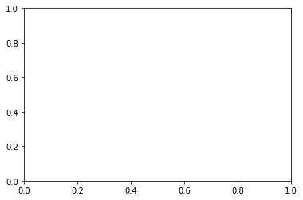
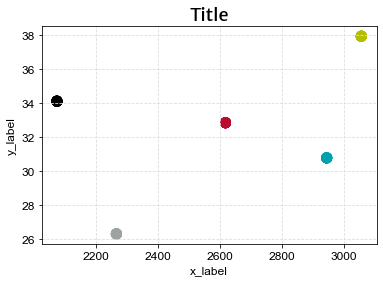

import pandas as pd
import matplotlib.pyplot as pltblack = '#000000'
red = '#BA0C2F'
lake_blue = '#00A3AD'
hedges = '#B4BD00'
grey = '#9EA2A2'
colors = [black, red, lake_blue, hedges, grey]data = pd.read_csv('all_years_w_recruiting.csv')data['Rank'] = data.Rank.str.split(pat=' ', expand=True).iloc[:,1]data.head()| Date | Time | Opponent | Rank | Site | TV | Result | UGA Points | Opponent Points | OT? | Attendance | Year | Coordinator | 4 Year Avg. Recruiting Points | |
|---|---|---|---|---|---|---|---|---|---|---|---|---|---|---|
| 0 | September 1 | 6:45 p.m. | Oklahoma State* | 13 | Sanford StadiumAthens, GA | ESPN2 | W | 35 | 14 | NaN | 92746 | 2007 | Bobo | 2054.75 |
| 1 | September 8 | 5:45 p.m. | South Carolina | 11 | Sanford StadiumAthens, GA (rivalry) | ESPN2 | L | 12 | 16 | NaN | 92746 | 2007 | Bobo | 2054.75 |
| 2 | September 15 | 1:00 p.m. | Western Carolina* | 23 | Sanford StadiumAthens, GA | CSS | W | 45 | 16 | NaN | 92746 | 2007 | Bobo | 2054.75 |
| 3 | September 22 | 7:45 p.m. | at No. 16 Alabama | 22 | Bryant–Denny StadiumTuscaloosa, AL (rivalry) (... | ESPN | W | 26 | 23 | OT | 92138 | 2007 | Bobo | 2054.75 |
| 4 | September 29 | 1:00 p.m.[5] | Ole Miss | 15 | Sanford StadiumAthens, GA | LFS | W | 45 | 17 | NaN | 92746 | 2007 | Bobo | 2054.75 |
data.groupby('Coordinator')[['UGA Points', '4 Year Avg. Recruiting Points']].mean().reset_index().plot.scatter(y='UGA Points', x='4 Year Avg. Recruiting Points')<AxesSubplot:xlabel='4 Year Avg. Recruiting Points', ylabel='UGA Points'>
df = data.groupby('Coordinator')[['UGA Points', '4 Year Avg. Recruiting Points']].mean().reset_index()# Create a plot
fig, ax = plt.subplots()
def format_plot(ax, title, subtitle, x_label, y_label, title_font='NCAA Georgia Bulldog Bold', subtitle_font='Arial', axis_font='Arial', grid_color='#dddddd'):
# Set title font
# Set plot title, subtitle, and axis labels
ax.set_title(title, fontsize=18+2)
# ax.subtitle(subtitle)
ax.set_xlabel(x_label, fontsize=12)
ax.set_ylabel(y_label, fontsize=12)
ax.set_title(ax.get_title(), fontdict={'fontname': title_font, 'fontsize': 18})
# ax.set_title(ax.get_title(), fontdict={'fontfamily': title_font, 'fontsize': 18})
# Set subtitle font
for item in ax.texts:
if item.get_text() != ax.get_title():
item.set_fontsize(14)
item.set_fontname(subtitle_font)
# Set axis font
for item in ([ax.xaxis.label, ax.yaxis.label] +
ax.get_xticklabels() + ax.get_yticklabels()):
item.set_fontname(axis_font)
item.set_fontsize(12)
# Add grid
ax.grid(color=grid_color, linestyle='--')
# Adjust padding
plt.tight_layout()
return axax = format_plot(ax, 'UGA OC Comparison', 'subtitle', 'x_label', 'y_label', title_font="NCAA Georgia Bulldog Bold")
# Add data to the plot
scatter = ax.scatter(df['4 Year Avg. Recruiting Points'], df['UGA Points'], c=colors, s=100)
fig
<Figure size 432x288 with 0 Axes>from matplotlib import font_manager
font_manager.findSystemFonts(fontpaths=None, fontext="ttf")
font_dirs = ['/Users/bleathers/Library/Fonts']
font_files = font_manager.findSystemFonts(fontpaths=font_dirs)
for font_file in font_files:
font_manager.fontManager.addfont(font_file)font_files['/Users/bleathers/Library/Fonts/Oswald-ExtraLight.ttf',
'/Users/bleathers/Library/Fonts/Oswald-Medium.ttf',
'/Users/bleathers/Library/Fonts/mustardo.ttf',
'/Users/bleathers/Library/Fonts/MerriweatherSans-VariableFont_wght.ttf',
'/Users/bleathers/Library/Fonts/Oswald-Regular.ttf',
'/Users/bleathers/Library/Fonts/Oswald-SemiBold.ttf',
'/Users/bleathers/Library/Fonts/NCAA_Georgia_Bulldog_Bold.ttf',
'/Users/bleathers/Library/Fonts/Oswald-VariableFont_wght.ttf',
'/Users/bleathers/Library/Fonts/MerriweatherSans-Italic-VariableFont_wght.ttf',
'/Users/bleathers/Library/Fonts/Oswald-Light.ttf',
'/Users/bleathers/Library/Fonts/POST.TTF',
'/Users/bleathers/Library/Fonts/Oswald-Bold.ttf']font_manager.findfont("NCAA Georgia Bulldog Bold")'/Users/bleathers/Library/Fonts/NCAA_Georgia_Bulldog_Bold.ttf'# type(scatter)
# def format_plot(df, title, subtitle, x_label, y_label, font_size=14, font_name='Arial', grid=True):
# # Configure plot font
# plt.rcParams['font.size'] = font_size
# plt.rcParams['font.family'] = font_name
# # Set plot title, subtitle, and axis labels
# ax.set_title(title, fontsize=font_size+2)
# ax.set_xlabel(x_label, fontsize=font_size)
# ax.set_ylabel(y_label, fontsize=font_size)
# # Add labels to the data points
# for i, txt in enumerate(df['label_column']):
# ax.text(df['x_column'][i]+0.1, df['y_column'][i]+0.1, txt, fontsize=font_size-2)
# # Add a legend to the plot
# legend = ax.legend(*scatter.legend_elements(), title='Legend Title', loc='upper right')
# ax.add_artist(legend)
# # Add a grid to the plot
# if grid:
# ax.grid(color='gray', linestyle='-', linewidth=0.25, alpha=0.5)
# # Return the plot object
# return fig, ax
# # Load data from a CSV file into a Pandas DataFrame
# df = pd.read_csv('data.csv')
# # Call the format_plot function to create a scatter plot of the data
# fig, ax = format_plot('Scatter Plot', 'Example Plot', 'X Axis', 'Y Axis')
# # Display the plot
# plt.show()